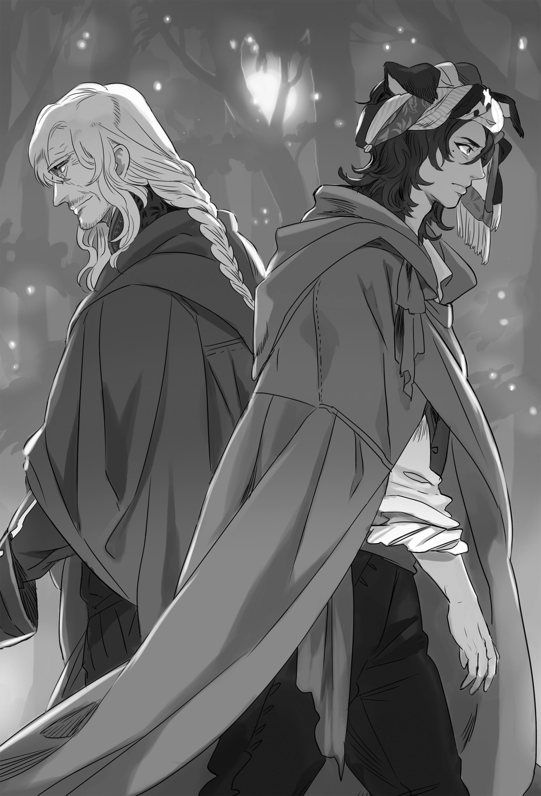

Chapter 3 – The Dukedom’s Ghost
.
Part 1
Around the time while the maritime guild was in argument of who to appoint as the successor of the chairman, Trystovy Kingdom was shaken by a severe impact that surpassed that.
They had prepared an army with overwhelming number. The sea was also blockaded by Gigante. The invasion was carried out when the time was ripe.
And yet the dukedom received a crushing blow where even the great general died in battle.
Luckily the maritime guild’s Piaggio also died from assassination, so a short peace visited the war front, but it was clear to anyone’s eye that it wouldn’t last long.
The dukedom’s nobles whose territory was close to Mulberry were panicking.
Even though it was already a great problem that the battle was lost, the dukedom even assassinated the leader of the maritime guild. The grudge of the maritime guild would be directed at them first.
In the first place could the dukedom win against that Margrave Antrim?
Margrave Antrim destroyed Haurelia Kingdom almost on his own effort. In addition just the other day he led a small force from Antrim and made the dukedom’s large army to take flight. There were a lot of dukedom nobles who whined in front of the heavy pressure from Margrave Antrim’s existence.
Shouldn’t they surrender to secure their own safety?
They originally betrayed Trystovy Kingdom for the sake of their own interests. One ore betrayal at this point wouldn’t weigh their conscience by much. The problem was whether the maritime guild would accept their surrender or not.
Viscount Orlando Rossi whose territory was not far off from Mulberry was also one of such nobles.
「──This isn’t funny!」
His territory was like the national border whether such term was accurate for it or not. This place was the boundary where the force of both sides would meet, and yet the dukedom army didn’t station any soldier here and retreat until the capital. It made Orlando wanted to spit.
In every era, fundamentally there would be two sided contractual relationship between the lord and the retainer where the lord provided his favor to the retainer and the retainer fulfilled his duty to his lord.
If that contract was one-sidedly breached, it couldn’t be helped even if the wronged party took it as a declaration of intent to void the contract.
Orland perceived the current situation as a fact that the dukedom had abandoned its duty to protect Rossi territory.
「Furthermore they even assassinated Piaggio of all people……those cursed incompetent fools!」
Orlando didn’t immediately decide to switch side because he felt a strong uneasiness that he might just poke the hornet nest even if he lowered his head to the maritime guild that was still angry with Piaggio’s assassination.
If possible he wanted to enter negotiation as an equal and served Baldr who would become the new king intimately with the condition that his right to rule his territory was assured.
As expected even Orlando didn’t have any intention to surrender unconditionally and entrusted his fate to the decision of the maritime guild.
「Anyone is fine. Connect me with the other side. Depending on the condition I’ll──」
「My lord, there is a guest……」
「At this kind of emergency! Who in the world is it!?」
He had no free time to have a leisurely talk while Rossi House’s survival was in danger. Orlando yelled angrily at the butler, but he immediately noticed how the butler was looking pale and shaking.
「That’s, the guest is Count Ost, Valerie-sama.」
「What did you say?」
It was the name of a big shot who he didn’t expect at all. Orland was stunned with his mouth staying open.
Anyone who participated in that coup d’etat knew about the existence of the shadowy mastermind Valerie.
After that Valerie lived a secluded life without clinging to social status, so he wasn’t really known among the young nobles, but for those who knew about the actual state of affairs to some degree, Valerie was someone who they absolutely didn’t want to turn into enemy.
There was only one possible reason for a key figure of the dukedom like Valerie to visit here.
「 ─It can’t be helped. I also can’t possibly turn him away.」
Even Orlando who had half turned his back on the dukedom didn’t even consider being completely hostile to the dukedom at this point.
Even if he was secretly plotting to betray the dukedom, he should act submissive for now. However, that was only as long as the dukedom didn’t force him to shoulder unnecessary burden.
But, the man called Count Valerie Ost wasn’t an existence that Orlando could oppose in every sense.
.
「Hey, I’ve been waiting Orlando.」
Valerie was sitting down deeply on the sofa and smiled at him with a very friendly look.
It was an act that was lacking decorum as a noble, but Orlando felt a pressure as though his heart was being tightly grasped. The words he was going to say was choked in his throat.
Even though Valerie’s age should have passed 80, he looked like he was still in his 60. And then there was his rough dominating aura that was characteristic of a former military.
Orlando right now was facing a monster that could control his life and death of the like of him with a single finger.
「I-it’s, an honor, that y-you, bring yourself, to a place that is, out of nowhere like this.」
Orlando just barely put up a smile and replied stutteringly.
His anger before this had gone to somewhere. Now he was like a frog that was being glared by a snake.
「It looks like the situation has gone slightly to the worse for you sir.」
Valerie lowered his head apologetically without removing his bright smile.
It was clear that Valerie was referring to the dukedom army’s retreat, but it was incomprehensible why Valerie expressly came here to apologize for that.
「I’m thankful for your words, but why……?」
「Truly, it’s astonishing just how worthless the army is. Their opposition to the kingdom in the past only has meaning by protecting the interests of us nobles, and yet this happened. Don’t you think that this is pathetic?」
「Haa……」
He didn’t get it. He really didn’t get what Valerie wanted to say.
Orlando was aware that he was thinking too much that his thought was going in circles.
It was as though his head was covered with a thick mist that made him unable to even look at his fingertip.
Cold sweat flowed all over his body like waterfall. Orlando had excellent survival instinct because he was a coward. His instinct sensed that a careless remark here would invite his death.
「You see, I’m thinking that it can’t be helped if you sir surrender to the maritime guild for the sake of surviving.」
Valerie spoke something terrifying with a friendly tone like a parent who smiled wryly seeing that a child breaking an important glass thinking that it couldn’t be helped.
Don’t tell me this person is going to rebel against the dukedom this time?
The dukedom’s unfavorable situation wouldn’t recover if an authority of the dukedom like Valerie switched side to the maritime guild.
Perhaps it would cause a lot of nobles to immediately switch side following him.
「……You must be, joking right?」
「Can this really be called a joke? As a feudal lord and as a noble, it’s only natural to prioritize one’s own people and bloodline isn’t it?」
Valerie continued still with the same smile.
But to Orlando that smile looked like it belonged to a devil that was inviting him to hell.
He had no proof but, his instinct was telling him that he shouldn’t agree with Valerie.
「The dukedom still hasn’t lost by any means. I believe that we should refrain from saying something careless.」
「──The dukedom can’t win this. The dukedom’s strength is too weak to be an opponent against that monster Margrave Antrim.」
「What?」
Orlando’s eyes widened at the statement of Valerie that he couldn’t object to regardless of how blasphemous it was.
But Orlando didn’t miss how there was a trace of mischievousness in those words.
「……However Count Valerie, it seems that you have a plan to win this?」
Orland made an all or nothing bet.
It was just his instinct that was telling him that Valerie wasn’t abandoning the dukedom, but he couldn’t imagine that this old man would accept defeat so easily.
「Ha-ha-ha-! I too have grown old if you my good sir can see through me so easily!」
Valerie laughed loudly. It proved that Orlando’s instinct was correct.
Valerie discarded his attitude just now that vaguely seemed unduly distant and tapped Orlando’s shoulder like a good friend.
「Forgiv eme. The dukedom is in a crisis right now. We can’t allow any chance of betrayal.」
「Do you have any idea of who might turn traitor, count?」
「it’s my job to smoke them out. The aftermath of the war will be dangerous if the dukedom isn’t united.」
「The aftermath, of the war……?」
There was a saying to not count one’s chickens before they had hatched. Did the current dukedom really have the leeway to think about the aftermath of the war already? Orland couldn’t help but question that.
Shouldn’t the prioritize thinking about winning against the kingdom first above all else?
Valerie shrugged as though to say that he understood about such worry since the start.
「You don’t understand? I’m saying that the intervention of Answerer Kingdom is getting up speed.」
If a country became indebted to the strongest country in the continent Answerer Kingdom, that country might end up getting hijacked by Answerer Kingdom.
Intervention from other country was always a double-edged sword for a country.
There were too many countries in history to count that got their territory devastated because it was used as a convenient stage for proxy war.
Answerer Kingdom only limited itself to supply assistance until now, but now it was going to intervene directly.
Orlando felt relieved from the bottom of his heart about his decision just now to not choose to betray the dukedom.
The like of maritime guild didn’t even have a one in million chance to win against the combined army of the dukedom and Answerer Kingdom.
「Even so, how many soldiers they are planning to send?」
There was also the possibility that perhaps the reinforcement sent here would just be a token effort.
That worry of Orlando ended up as a mere needless anxiety.
「General Mikhail Kalashnikov(ミハイル・カラシニコフ) who is in charge of subjugating the uprising in Nedras Kingdom right now will lead 20000 soldiers here.」
「The Death God Mikhail!」
When speaking about General Mikhail of Answerer Kingdom, it referred to the trump card of Answerer Kingdom who was famous as invincible and undefeated general.
The dispatch of him to the dukedom could be seen as the proof that Answerer Kingdom was regarding the dukedom as important.
No matter how militarily capable Margrave Antrim was, it was unthinkable that he would be a match against Mikhail.
(──Thank god I didn’t switch side!)
Orlando gave a heartfelt thanks to his own instinct.
He couldn’t imagine taking on that Death God Mikhail as an opponent.
Any people of Trystovy Dukedom knew about the battle of Mikhail against the conflict in Nedras Kingdom at the past.
Mikhail’s leadership ability wasn’t that high, but he was a monster who specialized in using his own unshakeable valor to heighten the morale of his soldiers and attacked the enemy like a tsunami──he was known as Arkhangelsk’s Thousand Slayer. Orlando absolutely wish to avoid turning such person into enemy.
Seeing relieve radiating from Orlando’s whole body, Valerie laughed from the bottom of his heart scornfully.
(I’ll be troubled if a shallow termite like you surrender. A termite should perish together with the house it is nesting in as befitting a termite.)
For that he didn’t care how many of the innocent populace had to die.
Only after the land had been destroyed and burned to ash to reduce everything into pure nothing that there was something new that could bud.
The relic of old era that was covered in sin should die to become nourishment for the new era. That should be their only duty as determined by history.
.
Part 2
「Fuwaa……I’m bored.」
Mikhail yawned while farting. The adjutant sighed for who knew how many time it was seeing his superior acting unbridled like that.
「The rebels are still waiting vigilantly for a chance to target you even though they have been quiet recently! Please be a bit more vigilant.」
「Those guys won’t aim at me. The most they can do is targeting supply convoy or official with weak security as harassment. Those guys are really gutless.」
Mikhail spat out in displeasure, but then he felt that his fart was smellier than he expected and he hurriedly fanned his nose with his right hand.
Nedras Kingdom had become Answerer Kingdom’s vassal state in reality using political marriage. It resulted in a large scale insurrection. More than one year had passed since them.
At first, Answerer Kingdom was forced into hard battle due to the beastman race in Nedras Kingdom cooperating with the uprising.
Although not to the degree of Nordland and Gartlake, Nedras Kingdom was also known as a country that was tolerant to beastman. The number of beastman living in this country was also a lot.
Beastmen had excellent physical ability and specialized in guerilla war. Answerer Kingdom became irritated by their resistance and dispatched the unparalleled general Mikhail Kalashnikov to here.
Mikhail’s existence itself was specialized for individual valor. The compatibility of beastman who specialized in assassination and subversive activities against Mikhail was too disadvantageous.
Mikhail had been attacked more than ten times. The number of beastmen who he cut down had been over several hundreds.
The beastmen had cut down many military commanders until then. But in front of Mikhail’s inhuman might, even they were unable to inflict a single scratch on him.
In the end, after a serious setback they were forced to give up attacking Mikhail himself with a feeling of defeat.
Even when Mikhail was patrolling around the city with only his adjutant like this, he couldn’t feel any sign of assassination attempt to himself.
For Mikhail whose only talent was fighting, the present situation was extremely boring for him.
「Perhaps I should march with just my underwear to lure them.」
「Please stop, that will be a disgrace for Answerer Kingdom.」
The adjutant was at his wits’ end seeing Mikhail’s stress was starting to accumulate.
Even without being stressed Mikhail was already a man who misplaced his shame and common sense somewhere.
A horse rider was approaching with a message at that timing.
「With all due respect, there is an order from his majesty to his excellency the general of the right Mikhail Kalashnikov!」
The messenger didn’t even wipe his dripping sweat. He dismounted from his horse and bowed until his forehead hit the ground.
Mikhail grinned like a kid who saw a snack. He then urged the messenger to continue with his message cheerfully.
「Umu, what is his majesty wished for from this Mikhail?」
「His majesty’s royal wish is for your excellency to lead 20000 men to Trystovy Dukedom and render judgment to the beastman Margrave Antrim!」
「Very well. I have certainly received his majesty’s order!」
.
Part 3
「This isn’t a joke, good grief!」
Augusto threw his body heavily on a sofa with a bad manner. He landed on two soft hills while facing the ceiling.
「My, thank you for your hard work today, young master.」
Augusto’s favorite mistress Catherine smiled alluringly and embraced him. Augusto buried his head into her chest and enjoyed the softness.
No matter the time, woman’s chest was a place of supreme bliss that granted peace of mind to man.
Augusto inhaled the faint scent of lily and he deeply immersed himself into Catherine’s large breasts as though he was sinking into a bottomless marsh.
「……Someone like me should just stay as a mere young master. A position like chairman should be taken by an old geezer with a single foot in their coffin. Isn’t that right?」
「That’s not true-!」
A small girl with blazing red hair that was tied into side tail──Laura flared up at Augusto’s comment.
「Caliber, talent, charisma. There is no one among the elders right now who can possibly match Augusto-sama in any of those!」
「Many times age and accomplishment are more needed in an organization rather than caliber, talent, or charisma.」
Although if Admiral Barbarino and Legal Officer Pietro gave their full support to him, then he had quite the confidence that he would be able to do a good job with it.
However before talking about feeling confident, Augusto’s true feeling was that position was troublesome.
The merchants of Mulberry undoubtedly would feel displeased if a young man like Augusto was ordering them around. Their emotion instead of their logic would make them do that.
Augusto’s position in his company was only as the proxy of his father Bennett.
The position of chairman would make his shoulder a heavy responsibility, furthermore he would also feel ashamed to hold such position. Augusto considered it as nothing but torture.
But the perception of Augusto’s subordinates starting from Laura were different.
The one who developed Garibaldi Company until this big wasn’t Bennett but Augusto. Such thinking was strong among them.
In fact Bennett was building his fortune using his political strength. His accomplishment as merchant was nothing to speak of.
In contrast Augusto had the business talent to stand at the peak of Mulberry. Laura didn’t doubt at the slightest. Rather she thought that now was the time for Augusto to shoulder the future of the maritime guild.
Of course there was also her bias toward the man she loved was affecting her judgment here, but it was also a fact that all who worked for Augusto was thinking like that too.
「No no, that position will be nothing but burden. Rather than doing something like that I prefer spending my time peacefully with Catherine and Laura like this……」
He said that while rubbing his face into Catherine’s chest. A bewitching coquettish voice 「Ahn!」 leaked out from Catherine’s lips.
「Geez! Perverted thing is forbidden!」
Laura was enraged and desperately tried to tear Augusto away from Catherine, but unfortunately the small Laura was too weak for that.
For Laura who had declared that she was aiming for the seat of Augusto’s wife, Catherine whose association with Augusto was only because of a contract was her enemy.
She hated her own childish appearance that had to yield to Catherine as a woman.
.
「My my, I wonder who are you taking after? Even though Angelica-chan too is going to come here from Nordland before long.」
「Eeeeeeh? K-kaa-san?」
A woman with eyes that were filled with unyielding spirit and large dog ears was there while folding her hands and head held high.
For August, this person was someone who he couldn’t oppose even more than Valerie in a sense.
「Errr, when did Kaa-san arrive here?」
「Only just now. It seems Gina-sama is also here. This isn’t the time for you to dawdle around here!」
「……I’m just thinking that I shouldn’t disturb Gina-sama’s time together with her great grandson.」
「I’m telling you that I want to meet her you know?」
「I’ll arrange it immediately!」
No matter the world, man couldn’t oppose his mother after all, but in Augusto’s case, he also couldn’t go against his mother physically.
After all Augusto’s mother was also his martial art instructor.
He was trained by his uncle Gitze at Nordland, but the one who trained Augusto hard at Tyrstovy was nobody else than his mother Idunn.
Idunn was going to cross the barrier of old age soon at her 60 years old age, but her thoroughly trained young-looking body could still be passed off as someone in her early forty.
It wasn’t just for show that she came from Nordland’s famous military family Mannerheim House.
Even his father Valerie was clearly not Idunn’s match if they got into a husband-wife quarrel.
If Valerie had a chance to talk with Cornelius’s Red Studhorse Ignis, they might be able to have a lively conversation with each other about their difficulty with their wife.
Although Augusto didn’t feel any feeling of empathy with Baldr at all.
At the very least in Augusto’s perspective, he didn’t have any memory of being abused by his mother to Baldr’s degree.
「You are acting like this even though Angelica will soon come here to be your wife. Don’t you have any intention to be a little bit more ambitious soon?」
「No, that’s……about her being my wife……I think that perhaps I’ll need to discuss it further with uncle.」
「Your path of escape has been closed already so stop with that unsightly attitude!」
「Of course it is~~」
Augusto’s shoulders dropped in dejection.
He wanted to play around a bit more. He wanted to have three or four more mistresses other than Catherine and had fun.
He didn’t hate Angelica, but that girl’s earnest affection felt heavy for Augusto.
However this matter wasn’t Augusto’s personal matter anymore. This was becoming the problem of the famous Mannerheim House of Nordland Empire and Garibaldi House that was one of the Seven Elders.
In addition with Gitze and Idunn giving their complete approval, the choice of refusing it selfishly was already gone for Augusto.
If Angelica arrived here from Nordland with reinforcement, his surrounding would definitely start taking action to make the two of them married. This was becoming one of the sources of Augusto’s despondency.
「Besides you will be thirty years old soon. Don’t screw around by staying single without any heir like this! Learn from his highness Baldr a little!」
「He is just drawing women toward himself because of him going along with the flow of event due to his indecisiveness.」
「It’s a problem of the resolve to take responsibility. Even that child won’t go as far as trying to steal a country if not for Marquis Randolph’s daughter.」
「……Even that is because of him getting carried by the flow of event.」
August’s cheeks puffed out in dissatisfaction. It was a childish act that he would only show before his family.
Come to think of it, Augusto noticed that apparently Idunn had heard about the situation from Valerie. Perhaps his mother knew about Baldr’s situation even more than him.
「Good grief, are you a little kid?」
A child would always be a child to a mother no matter how much time had passed, but as expected Augusto’s attitude was still too childish. It made Idunn scowled.
「It’s also the same with the elders. You yourself must have noticed it.」
「What is Kaa-san talking about?」
Augusto’s voice lacked his usual sharpness.
That was because he knew that he wouldn’t be able to trick Idunn no matter how much he tried to play stupid.
The necessary arrangements for Augusto’s appointment had been taken care of. What was left was for the person himself to resolve himself.
All the elders had agreed and their lord Baldr had acknowledged it. At that point Augusto understood that he would have to accept the position before long.
But even with that understanding, taking responsibility for a huge organization like the maritime guild and the various frictions that would result because of his age were still troublesome. So he was going to run away from it as long as he could.
Augusto didn’t have heaviness in his presence like Valerie that came from the condensation of his life experience. Augusto’s presence was light like he was just a finely crafted miniature of Valerie.
Idunn didn’t hide her irritation at the annoying attitude of her son. Her index finger was tapping impatiently on her upper arm.
「Haa……to be honest I really don’t want to do this.」
Idunn closed her eyes and sighed with a frustration that could be vaguely seen from her expression.
She was proud of her extremely intelligent son, but she was vexed how that man was able to predict that her son would be in this state of affairs.
As expected, perhaps a mother really couldn’t understand a son as much as a father could.
Idunn decided to stop hesitating and accept the demand from that man.
「We are going to Halil Forest tonight so prepare at once. I don’t care what kind of plan you have made for tonight, I’ll drg you there even if I have to put a rope around your neck!」
「 Okaa-sama , I’ll also──」
Laura immediately tried to butter up Idunn, but Idunn shut her up with just her gaze.
「We will go alone but there is no need to worry. Twenty or thirty people won’t be able to match us if my stupid son and me are together.」
「Eh, w-wait……」
「A-Augusto-samaaa!」
Without understanding what was going on, Augusto was hurried on by Idunn and when he realized it he was already riding a horse in bewilderment.
There was no problem because he didn’t have any plan of meeting anyone tonight, but Augusto was feeling that something was out of place for Idunn to act this forcefully.
When the lines of the mountain ridge was getting dyed by the sunset color and they arrived at Halil Forest, he immediately understood why he was feeling that something was out of place.
.
「──As expected won’t it be bad if we met secretly at this timing, father?」
Augusto smiled wryly and shrugged his shoulders pretentiously. Valerie stared at his son coldly.
He should call Augusto as a good son.
Valerie had five sons, but Augusto was the only one who Valerie told his true plan to.
His eldest son who succeeded Ost House was a mediocre person, while his sons who he sent out to other noble houses to be adopted all inherited the disposition of traditional noble.
No, it was Valerie himself who raised them to be like that.
He had decided from the start that he would use all of his children as tool for his ambition.
It wasn’t that he didn’t harbor any love for his son, but Valerie wasn’t someone so shallow that he would waver due to affection.
Augusto was continuing to produce result that was in line with Valerie’s expectation.
But, it was already insufficient with just that.
「Augusto, you don’t need to listen to your father’s words anymore.」
「──Father?」
Augusto of all people couldn’t do anything except asking back with a befuddled face.
His father, the man called Valerie was a selfish man who was the very picture of arrogance.
It had been engraved into his body that death would be waiting for him if he opposed his father.
It wasn’t just two or three times that Augusto almost died.
When someone was pushed from a ship’s deck into the sea, they could get eaten by shark before they could be saved if they had bad luck. After experiencing something like that several times, Augusto naturally became unable to oppose his father despite his own feeling.
That tendency grew even stronger since Augusto grew up and learned just how monstrous his father really was.
Perhaps because of that without realizing it he had grown to be someone who felt satisfied to be his father’s excellent pawn rather than holding his own ambition.
Augusto was someone with superior capability, but he was lazy and profligate. It was Valerie himself who raised him to be like that, but he had to change from here on.
After all──.
「From now on both of us are enemy. Try defeating me seriously if you don’t want to die!」
「……What are……what are you saying?」
「You still don’t understand? Or are you pretending to not understand?」
「Even if you tell me something like that……」
Augusto was really unable to comprehend the meaning of Valerie’s words.
But, for some reason he was sensing that there would be something terrifying when he understood it.
「I’ll tell you then if you don’t understand. From here on I will become your enemy. If you believe that you can win against me while treating it like somebody else’s problem then do so.」
「Becoming enemy──that’s the plan from the start isn’t it!?」
Augusto was bewildered.
Valerie had been secretly maneuvering within Trystovy and prolonged the battle with the maritime guild to make the feeling of war-weariness spread throughout the populace.
And now that Baldr had made his entrance when the time was ripe, he would put an end to the battle and Baldr would revive the kingdom as a hero. That was Valerie’s plot.
The populace had been suffering because of the nobles’ tyranny and the burden from the heavy tax and conscription due to the endless war. They were harboring hope that perhaps Baldr would sever this negative spiral for them.
Things had been mostly moving along as Valerie envisioned except for the death of Piaggio.
And yet he was saying this now.
──Actually, somewhere inside his mind Augusto had understood the meaning of Valerie’s words. He just didn’t want to recognize it and sealed his thought.
「At this rate, this war will end up with only Margrave Antrim replacing the archduke. That will be insufficient. That’s not what I risked my life and fight until now.」
He had to make the opportunism nobles to continue to oppose Baldr and fight until the very end into their certain destruction.
To do that, someone to guide them from the shadow was absolutely necessary.
Someone with the power and political strength and accomplishments to make the nobles harbored the illusion of hope that they would be victorious.
「All the relics of the past should be gone. The bud of the new ideal should be raised from a pure wasteland after anything and everything has vanished. To make that happen, I have arranged to take on all the evils in the dukedom.」
「So that is your intention from the start!」
Valerie would control the dukedom as the shadowy fixer in order to revive Trystovy.
That was what Augusto was told by Valerie. He didn’t hold any doubt about what he was told.
However Valerie had been resolved since the start to share the fate of the dukedom.
「You don’t have any duty to intentionally commit suicide like that. Baldr is a disgusting bastard, but he isn’t so incompetent that he will allow the dukedom’s nobles to do as they please. You don’t need to accompany the dukedom to the end!」
Augusto tried to persuade his father for the first time since he was born.
It was clear that those incompetent dukedom nobles who had nothing but strong sense of privilege would collapse by themselves even if they were left alone.
There wasn’t any need for Valerie to become a human sacrifice just to lead them to certain destruction.
However Valerie was furious to Augusto’s pleading words.
「Have you forgotten my teaching that a rotten fruit will rot all the fruits within the box? Besides Margrave Antrim is a hero but as a person he is too virtuous. Though that too is a disposition that is hard to be found in a king.」
The nobles would immediately go to Baldr and wagged their tail when the dukedom became disadvantaged for the dukedom.
Baldr couldn’t kill his heart and brought himself to slaughter such people.
As the result, dissatisfaction would remain both among the nobles and among the commoners. Even if those nobles got their lives saved, if their privilege was taken away then it was in their nature to hold deep grudge.
There was no doubt that they would go into hiding and concealed themselves for many years. Then when the kingdom finally became used to the peace, this time bomb would explode. After all the time when the crops started to bear fruit was exactly the time when vermin and parasite took action.
If Baldr couldn’t kill them, then someone else had to do it.
A demon who wouldn’t care what kind of critic or lamentation or vilification he received and push the whole family and followers including even the women and children to hell while laughing joyfully. Such demon had to do it.
It was clear that Valerie intended to be such demon.
「That’s too selfish of you! Why do you have to go that far!?」
「Because I have decided so.」
In order to make the ideal that he dreamed together with his late friend became reality, Valerie had destroyed the royal family and massacred the nobles and merchants who supported them.
In the dukedom where the nobles took over the country, the right of the commoner was limited and uncountable people were gasping in misery.
Valerie was standing above thousands, tens of thousands of corpses.
Even so, there was something that he couldn’t give up, something that he had to accomplish no matter what he had to sacrifice.
Valerie understood the best than anyone that there was no place for an unforgivable sinner like him in the new era. No, he had decided that such man must not remain alive.
「Now go live on your own.」
「Don’t screw with me! You want to push me away at this point-?」
Augusto who had been working until now in order to realize Valerie’s plot knew what had to be done with Trystovy, however he didn’t have the sense of mission to accomplish that at all cost.
The stage where he was standing was too different from Valerie who created the present situation with his will of steel.
That was why he was feeling nothing but fear when he was told to decide his own ideal, formulate his own policy, and bore the responsibly for everything by himself.
「……At worst you can get off from the stage here, but even if you do that there won’t be any major change to the script. Though the number of sacrifice might increase because of that.」
「You……-!」
Augusto’s sight turned red from rage and he moved to punch Valerie, but an unshakeable old and thin arm held him back.
「──Good grief, you haven’t changed since the past how you always use too few words. You should honestly tell your son that you don’t want to push your negative inheritance to your son.」
「You have become really old huh, Gina.」
「I don’t want to hear that from you-!」
Speaking of growing old, it was Valerie who had aged greatly in appearance. Gina spontaneously pondered to punch Valerie in Augusto’s place.
「Gina-san, how……」
「Idunn told me. This guy and me also has a rotten relationship between us.」
「Hmph, I still haven’t forgiven you by any means.」
Valerie scowled with a loathing look and glared at Gina.
Actually Valerie couldn’t forgive Gina’s betrayal for abandoning Viktor and having a child with another man.
If Gina married with Viktor, if it was known that her daughter Dahlia inherited the blood of beastman, then the king too shouldn’t give any attention to Dahlia.
There might be a future where Viktor wasn’t executed though the possibility of that happening was low with how Viktor was leading the reformist.
Valerie was holding a grudge toward Gina knowing that it was unreasonable and self-centered of him.
「Only that person can forgive me. I never think about asking forgiveness from you.」
「Certainly, that’s true.」
They were talking about that best friend of his. He must not hold even a sliver of resentment toward Gina, but if there was anyone who had the right to forgive her, then it could only be Viktor.
「Even so the depth of your obsession is also really something. I can’t believe that you haven’t given up your ideal with that person even at this age.」
「Give up? What reason is there to give up? To give up is to accept that something is impossible isn’t it? I have never accepted that even once.」
「──You are just that kind of person.」
He used the setback that he tasted in his youth as source of encouragement instead with his will of steel that wouldn’t give up no matter what, at the same time he also acquired knowledge like an owl as he grew old.
The passing of time had transformed Valerie into a terrifying conspirator that gave her a vague fear.
Perhaps it was exactly because of that she should say it.
She didn’t want to let that negative resentment that made him fell to be a monster like this to remain behind.
「You always decide everything by yourself without telling anyone else like this. That person told me you know? 『Even though that guy will help me even without me saying anything to him, unless that guy ask me for help then I won’t even notice that he need help』 He said.」
「What, stupid thing you are……」
Valerie who was like an unshakeable rock was suddenly wavering greatly.
「He is different from me who only has cleverness, he grant courage to everyone just by being there. Viktor, it’s me who was saved by you. And yet! I didn’t know anything until the day you were executed! I wasn’t of any use at all!」
When Valerie who was in other country learned about the incident, Viktor’s execution was already over. In the first place it was Viktor who made the request so that Valerie wouldn’t know because he knew that Valerie would surely risk his life to do something reckless to save him.
Certainly if Viktor was still alive when Valerie heard the news at that time, he might led soldiers to attack the capital.
Viktor knew about his best friend’s temperament very well in that respect.
But from the perspective of Valerie who was left behind, such consideration was nothing but needless meddling for him.
「Why didn’t that guy say anything to ask me to fight together with him? I’d die gladly for him if only he said just a single word!」
「There is obviously just one answer for that──he wanted you to live.」
「I too wanted him to live!」
「Well, of course you are. About that, for some reason there was a letter that is addressed to you that came to my place instead. Sorry that I’m giving it to you this late.」
「──What?」
「『I guess it’s impossible to ask you to not be angry. Even I will be angry if I’m at your position. You can be as angry as you can, so live on and be happy.』 That man is really selfish and won’t think of other people’s circumstance.」
「You……that damn moron Viktor! You bastard are always like that! You always───a damn good-natured person who only think about other people!」
It was impossible to directly meet and talk with Viktor anymore, but Valerie understood very well like the back of his own hand how Viktor was feeling, how he was thinking when he left behind these words.
Even so, he wanted Viktor to live and said those words directly to him.
「Even between best friends that are profoundly compatible with each other, there are things that can’t be conveyed unless you put them into words. You too shouldn’t be stingy with words at this late in the game.」
「──That is a needless meddling.」
Valerie made a sullen face in a bad mood, but his expression was bright as though the thing that had haunted him was gone.
「Augusto!」
「Yes-!」
「Answerer Kingdom is finally putting their serious effort in interfering with Tyrstovy. It’s a rare opportunity that I’m using to bring together the fence-sitters nobles and instigate them to fight his highness Baldr resolutely.」
It was a job that could only be done by Valerie.
If it was the old general Olten, he might cut down his incompetent ally.
In fact, the nobles betraying the dukedom and surrendering to Baldr would almost certainly give a negative influence to the invasion.
Valerie wouldn’t allow them to do that. He would show them the illusion of victory and made them accompany the dukedom until its destruction. Great political power and negotiation ability was necessary for that.
「As a traitor of the kingdom and the one who is in charge of the dukedom’s dark side, my name is quite famous. Even you must have understood that me switching side at this point won’t earn my any pardon due to my position. There should also be a lot of commoners in Mulberry who had their parents and siblings killed in the civil war and escaped to there.」
Valerie was one of the ringleader of the kingdom’s destruction that was equal to Olten.
He was in a position where he should shoulder the responsibility for the slaughter and mayhem that happened due to the kingdom’s destruction.
Baldr would have to build a just rule as the new ruler of Trystovy. He would be forced to judge Valerie’s sin regardless of his own wish.
No, he had to do that no matter what.
「I don’t want to leave behind even a single old fetter of obligation at the beginning of the new era. I shall risk my little remaining life for that sake. And then I will boast to Viktor in that world about the new future of Trystovy.」
Augusto realized that Valerie didn’t have any regret.
「──Farewell, my son.」
Those unshakable words were filled with a flood of feelings.
Augusto stifled his voice and wiped his overflowing tears.
「I’m not a serious person like you, so I’ll go live in a world where I can where I have more freedom.」
「Also hurry and make a child. It’s unfortunate that I won’t be able to see my grandchild’s face but, you can just tell your child that their grandpa and grandma were strong people and lovey dovey with each other.」
The voice came from someone completely unexpected.
Even someone like Valerie froze with his mouth wide open from the shock.
「What? Do you plan to leave behind your dear wife and go alone?」
「Idunn, weren’t you listening? I──」
「I want to die together with you. I won’t let you say that you didn’t know how passionate beastman is you know?」
Idunn’s arm was already hugging Valerie’s right arm when she said that.
It was clear that she had no intention of yielding here no matter what.
「You won’t have any parent who will look after you anymore, so it won’t be manly if you can’t properly stand on your own you know? You inherited the blood of my husband and me. So you should be someone with great potential.」
His mother’s casual words that really weren’t suitable for the last farewell in this life made Augusto realized that he had completely lost the protection of his parents.
From now on he would have to live with his own strength.
「Stay healthy! When Angelina come, tell her that I’m sorry I won’t be able to see her in wedding gown.」
「I’ll prepare an extravagant wedding dress for her so that Kaa-san will regret it that you can’t see it.」
Valerie looked up the sky while scratching his head because he had been outwitted. Idunn snuggled up to him and clasped the hand that Gina held out to her.
「I’ll look after your grandchild.」
「Well, Gina-sama looks like you will still live long even if you are leave alone.」
Everyone here knew that they would never meet anymore, but the two women were smiling calmly to the end.
「I’m jealous to you as a woman.」
「Yes, dying together with their husband is an honor for a beastwoman.」
Their hand let go of each other.
That acted as the signal for the two of them to turn their back on each other without any prompting.
Valerie and Augusto were also turning their back on each other after the women. Then they began to walk their own path.

「Good grief, this is the last advice from your father. If you’re going to receive a beastman wife then you better be careful in treating her.」
「I wish you would tell me that earlier. Now I have no confidence in reining in Angelica.」
Valerie and Augusto smiled wryle as fellow man with similar worry.
Valerie didn’t even need to look to feel sure that Augusto was making a brazen and determined smile of a man who was growing dazzlingly. A feeling of wanting to cry ran through Valerie.
「Farewell, son.」
「Sayonara father, Kaa-san.」
.
Part 4
The next day Augusto assumed the position of Garibaldi Company’s president and sent a message to the elders that he accepted his appointment as the chairman of maritime guild.
Barbarino and others were puzzled by Augusto’s sudden change of mind, but there was no denying that this was a good news.
With the full cooperation of the other elders, Augusto was appointed as the 24 th chairman of the maritime guild.
Of course, this appointment aroused criticism.
There were also senior merchants who hinted that they withdraw from the guild rather than obeying a youngster like Augusto, but Augusto approved their withdrawal from the guild without any mercy.
「 Very well, then leave and don’t come back.」
They were only intending to make a threat but they never expected for Augusto to accept it immediately like that and felt bewildered.
The kingdom administration under the control of Margrave Antrim was already in control of the South Seas including Marmara Sea.
Now the maritime guild had joined force with Sanjuan Kingdom and Majorca Kingdom into an allied navy. There was not a single country in this continent that could oppose such force with their own strength.
There was no merchant that could do his business right in the midst of a different sea force.
Withdrawing from the maritime guild meant the destruction of their business.
The maritime guild was now a subordinate organization of Baldr’s kingdom administration. If they withdrew from there then they wouldn’t be able to receive the protection of the kingdom administration.
They only noticed that for the first time after they were expulsed.
──The cost of opposing the guild was high.
They clung on the sleeve of the maritime guild begging to be allowed to return without caring about shame or respectability. It made them indebted to Augusto to be allowed to return and they were unable to oppose him anymore.
There wasn’t any trace of the easygoing and unconcerned Augusto there anymore. After that there was nobody who raised objection of him being the leader of maritime guild anymore.
.
「Good grief, have you been holding back all this time?」
「It’s their fault for making me went through such needless hardship in this half month.」
「If only you were like this from the start.」
.
The elders all grumbled and glared reproachfully to Augusto. As expected he felt awkward from that and scratched his head.
「Well, please don’t bully me like this.」
This situation was also unexpected for him.
Augusto had never thought of becoming the maritime guild’s chairman even once in his life plan.
Even now Augusto would still continue running away from the responsibility if not for his meeting with Valerie.
「I had various reasons but, it seems that my leeway for playing around is also running out, so it can’t be helped.」
「……Hou?」
The elders weren’t stupid people who wouldn’t notice the meaning behind Augusto’s words.
The eyes of Admiral Barbarino who had especially sharp sense of smell for danger were filled with terribly dangerous color.
「What do you mean by that?」
Baldr who was completely estranged from the internal situation of Trystovy asked.
「Answerer Kingdom is sending reinforcement.」
An invisible electric shock ran through everyone when they heard those words.
The biggest and strongest country in the continent, Answerer Kingdom was getting serious.
That was a situation that Baldr and others, the Trystovy Kingdom government feared the most.
Until now Answerer Kingdom was already giving the dukedom military assistances. For example the huge battleships that they lent to the dukedom.
However from their experience with Nedras Kingdom where they were racking their brain due to the muddy guerilla war there after their overt intervention, Answerer Kingdom continued to take policy of indirect intervention and exploitation, by making the dukedom taking the brunt of the damage from the war.
Answerer Kingdom changing their policy here had a tremendous meaning.
「……So the dukedom is too disappointing for them.」
Baldr and Augusto nodded at Barbarino’s words.
At this rate Trystovy would be united by Baldr’s hand before long. Answerer Kingdom undoubtedly couldn’t just watch that happened, so they reluctantly used brute force approach like this.
If Baldr ascended to the throne of Trystovy Kingdom and formed a grand alliance with Sanjuan Kingdom, Majorca Kingdom, and Mauricia Kingdom, it would become a great force that even the strongest country in the continent Answerer Kingdom couldn’t easily oppose.
Even if their intervention like this wouldn’t bring them any benefit, they were politically forced to take this option.
「I wished we could make one more push before this happen. Now that it has come to this we can’t expect the nobles to betray the dukedom anymore.」
「Ah, there won’t be any problem with that.」
Baldr replied to the words of the finance official Mario with a tone that broke no argument.
「It’s better that we now don’t need to take in uncertain factor who we don’t know when they will betray us. After all we have no position to give those guys who would turn traitor at this late in the game.」
「Indeed. It will be more convenient for the kingdom in the future if that kind of idiots is destroyed in one go.」
「……You can really talk now.」
Augusto’s scathing words made Mario slightly taken aback and his face turned pale.
He even wondered if Augusto’s somewhat slovenly attitude until just yesterday was just acting.
「And? How is Answerer Kingdom going to move?」
Baldr asked provocatively. Augusto renewed his feeling that he hated this guy as expected while bowing from his waist courteously.
「It seems they are giving up bringing Nedras Kingdom under their control for the moment. They will send General Mikhail Kalashnikov and an expedition army that numbered 20000 men to Trystovy.」
「They’re sending that battle junkie?」
「The Arkhangelsk’s Thousand Slayer huh.」
「It looks like even Answerer Kingdom has fewer capable personnel than we thought.」
The elders each spoke their impression, but they shared one thought. It was that Mikhail was a troublesome and formidable enemy.
He was a man who was in the top five of this continent’s general that you didn’t want to encounter in the battlefield.
Their impression didn’t change even after they had seen how Baldr and Maggot fought the other day.
Answerer Kingdom was a country that followed traditional convention in both good and bad senses. Mikhail had climbed into the rank of the general of the right of such country, which was the position for the number 3 of the military. And he did it with only his fighting skill. He was an enemy that could be underestimated by any means.
If he was dispatched to Trystovy, it was even possible for him to crush the opposition in one go.
Even the beastman force of Nedras Kingdom that was highly evaluated for their fighting prowess was cornered in a short time to the point that now they could only carry out guerilla war just to harass the enemy force. All of that was done by Mikhail alone.
「Please hurry with the information gathering as fast as possible. His personality, hobby, or even his taste in woman, anything is fine. It will be best if we can understand his disposition.」
Their strongest fighter Maggot had returned home right now. They could make as many countermeasure as possible and it still wouldn’t be too excessive.
But at this time nobody expected that they would meet with Mikhail unexpectedly quickly.
.
Part 5
The expedition army of Answerer Kingdom in Nedras Kingdom was ordered to move to Trystovy. They departed in perfect order──there was no way that could be the case.
To put it mildly, there was only the bare minimum order in the army. Many of the soldiers were tired from fighting in other country for a long time.
「Is the situation in Nedras really that bad?」
Olten who led his force to welcome them frowned.
Looking at the military force comparison, a small country like Nedras shouldn’t be able to give any trouble to Answerer Kingdom.
And yet the army of Answerer Kingdom was exhausted to this degree. It was thanks to the populace of the whole country cooperating with the rebels.
It seemed that Answerer Kingdom’s presence there was really despised.
As expected it was a bad move to slaughter the beastman race of that country indiscriminately.
Being calculating and lenient was also necessary for governing. Nobody would have it hard if just winning the battle before one’s eyes was enough to take care of everything.
It was important to consider what could be gained by fighting and winning. Even if it was a victory, if one didn’t get anything from it and it only increased the loss instead, then such victory was meaningless.
Olten was calmly considering that, but the general of the right of Answerer Kingdom, Mikhail was most likely not someone who considered such thing at the slightest.
He was famous for loving to fight and joined military just for that.
「I hope his appearance here won’t become a disaster for our country……」
The dukedom’s prince, Bernardi ignored that worry of Olten and watched the reinforcement in great delight.
Even just from a glance it was clear that in Bernardi’s eyes he was only seeing that a reassuring ally had come to their help. Olten felt dispirited at such shallowness.
The direct intervention of Answerer Kingdom was like a powerful medicine. Who knew what kind of effect it would bring to Trystovy Dukedom.
They would be greatly indebted to Answerer Kingdom because of this. The commoners would also not have any nice thought seeing their land trampled by soldiers of another country. But Bernardi’s expression showed that he didn’t comprehend any of that.
As expected it seemed the archduke Jack understood it, but Cesare’s crushing defeat was so shocking that he was forced to turn a blind eye toward the aforementioned risks.
Olten couldn’t help but feel ashamed because this was the result of him causing the chaos within the army that Cesare led.
If he thought about it, losing the war would only mean death for the archduke and others.
Their position was different from the commoners to whom this war was only to decide who would rule over them.
But even so, Olten wished that they would still display their dignity in order to protect this country.
「──Strange.」
「Is something the matter?」
Olten suddenly tilted his head in puzzlement. His staff officer Sylva asked him.
「I can’t find General Mikhail’s figure anywhere. There is no way that a man with reputation like his will be someone unassuming that I can’t sense from here.」
A valorous general would radiate a presence that couldn’t be hidden even from afar.
But for some reason Olten couldn’t feel such present from the Answerer Kingdom army that numbered 20000.
Even though they weren’t in the middle of battle right now, Olten didn’t think that he would overlook someone like Mikhail.
The man at the head of the army who seemed to be a commissioned officer kneeled in front of Bernardi who was here to greet the reinforcement.
「It’s our greatest honor that your highness personally come here to receive us. However! Right now we are already at times of war. I have with me a message from our commander the general of the right Mikhail Kalashnikov!」
「A, message?」
「Yes! It is our mission to offer victory to the dukedom. Therefore even knowing how impolite this might be to your highness, I decided to ascertain the rebel army at Mulberry with my own eyes──that is all!」
*Gakun* Bernardi’s jaw fell. It felt like Olten could almost hear the sound of his jaw being dislocated.
Was this person seriously saying that the general personally went out by himself to act like a scout?
This really wasn’t funny at all.
If by any chance, by any chance Mikhail was killed by the kingdom’s side, the 20000 troops of Answerer Kingdom would immediately be turned into disorderly brigands.
The officer who gave them the message was sweating like waterfall. It told them that Mikhail’s action wasn’t something intentional from Answerer army.
「D-drag him back! We can’t possibly lose the general here!」
Bernardi lost his self-control. The officer endured it with a bitter expression and hung his head in dejection.
「There isn’t anybody in our army who can stop that person!」
They would have stopped him from the start if they could.
There was no subordinate who wouldn’t stop their commander’s suicidal act. But Mikhail was Mikhail because he couldn’t be stopped with common sense.